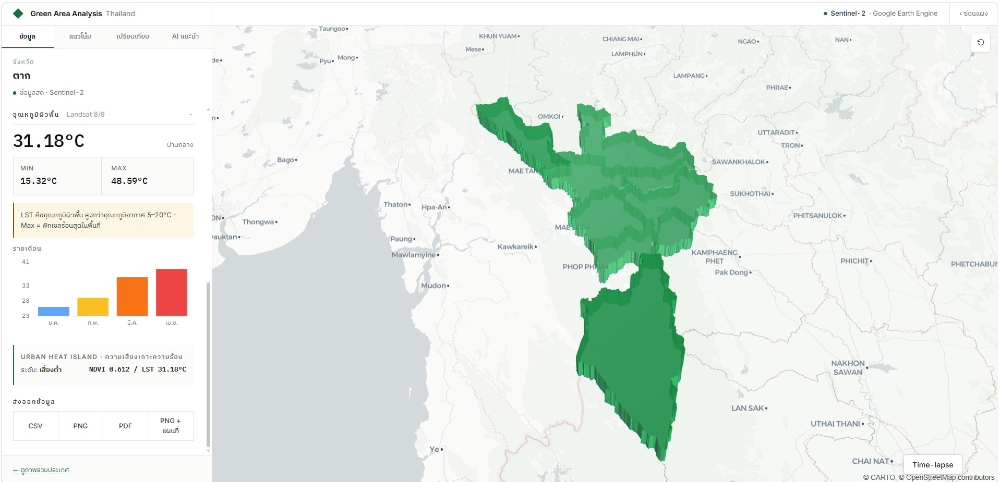

แผนที่ความเขียว
ของประเทศไทย
ดัชนีพืชพรรณ อุณหภูมิพื้นผิว และพื้นที่สีเขียวต่อประชากร จากภาพถ่ายดาวเทียม เรียบเรียงเป็นสมุดข้อมูลที่ค้นได้ทุกจังหวัด ทุกอำเภอ — เพื่อการตัดสินใจเชิงผังเมืองบนหลักฐานที่มองเห็นได้

เปิดดูได้ทุกจังหวัด — green per capita
เรียงตามพื้นที่สีเขียวต่อประชากร · แท่งคือ NDVI รายเดือน
เครื่องมือเบื้องหลังสมุดเล่มนี้
สถิติเชิงพื้นที่
Spatial statisticsNDVI · LST · พื้นที่สีเขียวต่อหัวเทียบเกณฑ์ WHO ระดับจังหวัดถึงอำเภอ
แนวโน้ม + พยากรณ์
Trends & forecastย้อนหลังหลายปี พร้อมพยากรณ์ 3 ปีด้วย OLS regression และช่วงเชื่อมั่น 95%
เทียบภาพดาวเทียม
Satellite compareเลื่อนเทียบสองปีแบบ swipe หรือดูแผนที่ผลต่าง (Δ)
ผลความเย็น
Cooling effectRegression ของ LST ต่อ NDVI ระดับอำเภอ — ยิ่งเขียวยิ่งเย็น
AI แนะนำจุดปลูก
AI recommendationHeatmap จัดลำดับพื้นที่ที่ควรปลูก พร้อมพันธุ์ไม้แนะนำรายภาค
รายงาน + แชร์
Reports & sharingส่งออก PDF/CSV พร้อมพิกัด และลิงก์แชร์ระดับอำเภอ
แหล่งข้อมูลและกระบวนการ
เปิดสมุดดัชนีพื้นที่สีเขียว
ของจังหวัดท่าน
เข้าถึงข้อมูลดาวเทียมเชิงพื้นที่โดยไม่มีค่าใช้จ่าย สำหรับหน่วยงานและสาธารณะ
เข้าสู่แดชบอร์ดรองรับ Chrome · Firefox · Edge · Safari